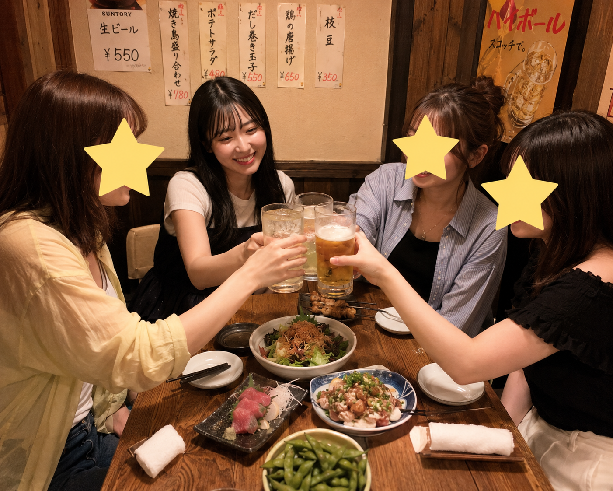
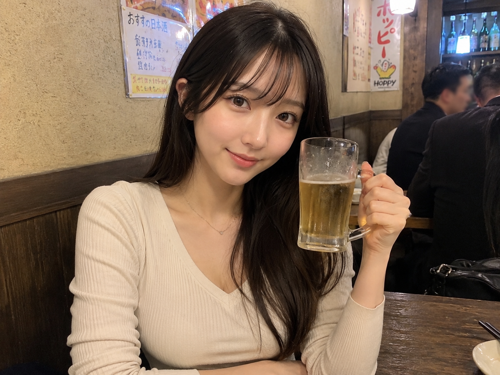

国内旅行
気になった場所にふらっと出かけるのが好き。旅先での何気ない景色や、その土地の空気を感じる時間がお気に入りです。
Self Catalog
大阪で働く25歳。本業は商品販売の営業、副業はWeb制作チーム「webora」の営業をしています。
旅とおしゃべりとお酒が好き。等身大の「わたし」を、このページに詰め込みました。
Profile
Side Work
本業の営業とは別に、Web制作チーム「webora」で営業として活動しています。
「ドメインって何？」というところからのスタートでしたが、日々勉強しながら、お客様のホームページ作りをお手伝いしています。
Hobby
気になった場所にふらっと出かけるのが好き。旅先での何気ない景色や、その土地の空気を感じる時間がお気に入りです。

くだらない話で盛り上がる時間が大好き。学生の頃から変わらず、誰かと過ごす時間が一番のリフレッシュになっています。

美味しいお酒を飲みながら、大切な人たちと乾杯する時間が幸せ。いつか行きたい場所で、行きたいお店でお酒を楽しむのが夢です。
My Life Catalog
まだ人生の完成形には全然たどり着いていません。むしろ、ここからが本番。
これまでの歩みを、6つの時代に分けてまとめてみました。
0〜6歳｜幼少期
小さい頃は、好奇心旺盛で、気になったことはとりあえずやってみるタイプ。
家ではのんびり過ごすことも多かったけれど、外に出ると元気に遊ぶ子どもでした。
人の話を聞くのも好きで、家族や周りの大人と話すことも好きだった記憶があります。
この頃から、好きなことには夢中になる一方で、興味がないことにはあまり集中できないという、今につながる性格が少しずつ出ていました。
小学生｜友達と過ごすのが楽しかった時代
小学生になると、学校で友達と遊ぶ時間がどんどん楽しくなりました。
休み時間に友達と話したり、放課後に遊んだり、とにかく「誰かと一緒に過ごす」ことが好きな子でした。
勉強は得意な教科もあれば、ちょっと苦手な教科もあり、何でも完璧にできるタイプではありませんでした。
でも、分からないことをそのままにするより、誰かに聞いたり、自分なりにやってみたりすることは好きだったと思います。
今でも「一人で全部やる」より、人と相談しながら進めるほうが好きなのは、この頃から変わっていないのかもしれません。
中学生｜少しずつ自分の世界が広がった時代
中学生になると、小学生の頃よりも友達との関係が少しずつ深くなっていきました。
部活はバスケ部に入りましたが、「絶対にバスケがしたい！」という強い理由があったわけではなく、なんとなく入ったというのが正直なところ。
もちろん練習は大変でしたが、バスケそのものよりも、友達と一緒に部活をしたり、帰り道に話したり、学校で過ごす時間のほうが印象に残っています。
勉強や部活に一直線というタイプでもなく、友達とくだらない話をしたり、学校生活を普通に楽しんだり。
今振り返ると、特別大きな出来事があったというより、何気ない毎日を過ごしていた時期だったと思います。
この頃から少しずつ、「自分はどんなことが好きなのか」「どんな人といると楽しいのか」を知っていった時期だったのかもしれません。
高校生｜友達との時間を楽しんだ青春時代
高校生になると、行動範囲も広がって、友達と過ごす時間がさらに増えました。
学校生活だけではなく、遊びに行ったり、くだらない話で盛り上がったり、今振り返ると何気ない時間が一番楽しかった時期だったかもしれません。
友達と一緒に高校バスケのインターハイを見に行ったこともあり、スポーツを「自分がする」だけではなく「観る」楽しさも知りました。
将来については、まだ明確な目標があったわけではありません。
「将来何になりたいんだろう？」と考えながらも、とりあえず目の前の学校生活を楽しんでいた、そんな高校時代でした。
18〜22歳頃｜大学生活を楽しんだ4年間
高校を卒業して、大学へ進学。
大学では勉強だけでなく、友達と過ごしたり、遊びに行ったり、その時にしかできない経験を楽しんでいました。
高校までとは違って、自分で時間の使い方を決めることも増えて、「自由ってこういうことなんだ」と感じた時期でもあります。
将来については、まだ「絶対にこの仕事がしたい」という明確な目標があったわけではありません。
大学生活を送りながら、少しずつ「卒業したらどんな仕事をしよう？」と考えるようになりました。
振り返ってみると、勉強や就職だけではなく、友達と過ごした時間や何気ない日常も含めて、楽しい思い出がたくさんある4年間でした。
22歳〜｜営業として働き始める
大学を卒業して、社会人として営業の仕事を始めました。
最初は学生の頃とは環境が大きく変わり、「仕事ってこんなに大変なんだ」と感じることもありました。
思うように話せなかったり、失敗したり、落ち込んだりすることもありましたが、経験を積むにつれて少しずつ仕事にも慣れていきました。
営業をする中で、人と話すことだけではなく、相手の話を聞いて、「この人は何を求めているんだろう？」と考えることの大切さを学びました。
そして、ただ商品やサービスを紹介するだけではなく、相手の悩みを聞いて、一緒に解決方法を考えて提案することにやりがいを感じるようになりました。
社会人になってからは、仕事を通して少しずつ自分の得意なことや苦手なことも分かるようになってきました。
今では本業の営業に加えて、Web開発チーム「webora」の営業にも挑戦中。
まだまだ勉強することはたくさんありますが、「分からないからやらない」ではなく、分からないことを一つずつ覚えながら、新しいことにも挑戦しています。
まだ人生の完成形には全然たどり着いていません。むしろ、ここからが本番。
いつか好きな仕事をしながら、行きたい場所へ旅行して、美味しいお酒を楽しんで、大切な人たちと笑って過ごす。
そんな人生を目指して、
現在進行形で成長中です。